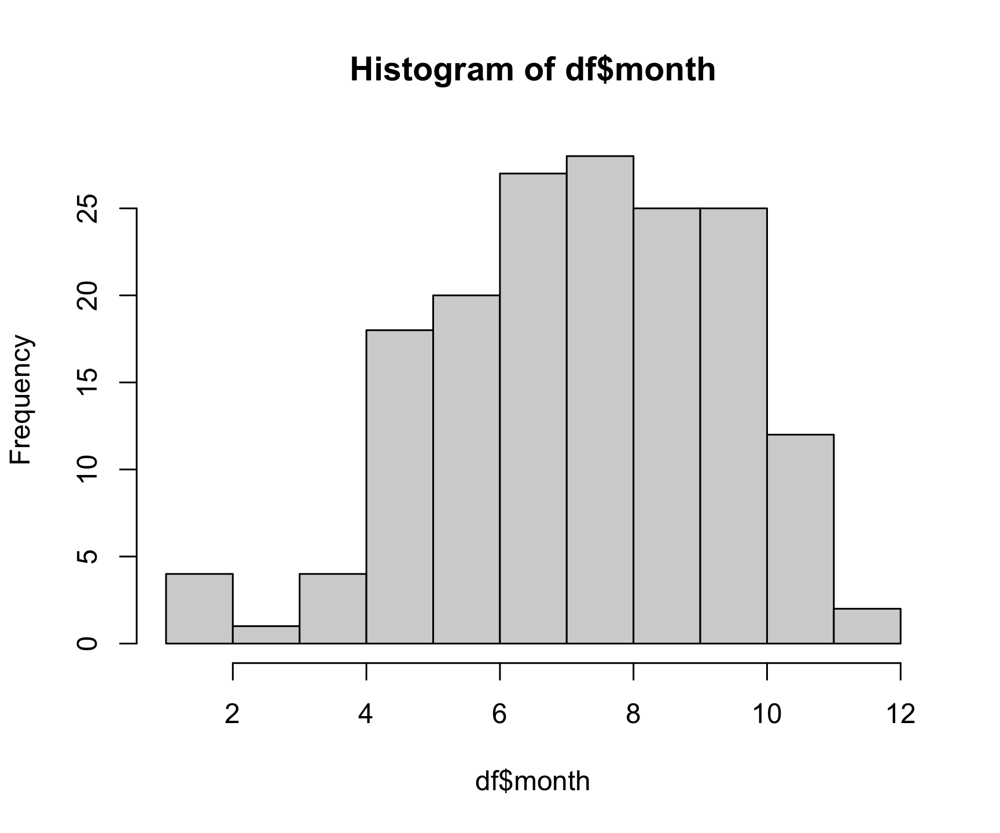
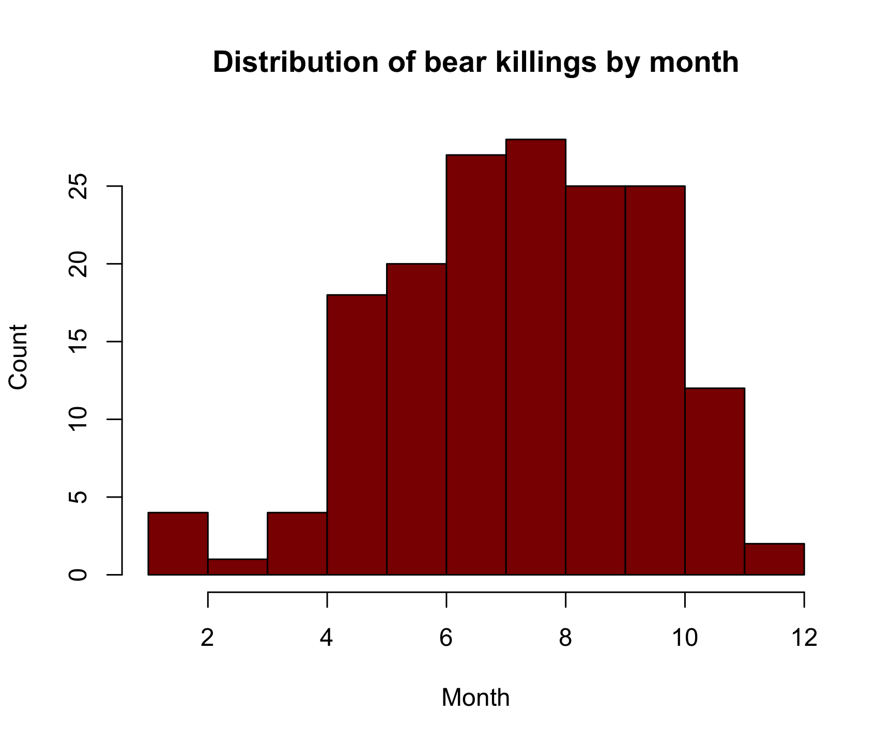
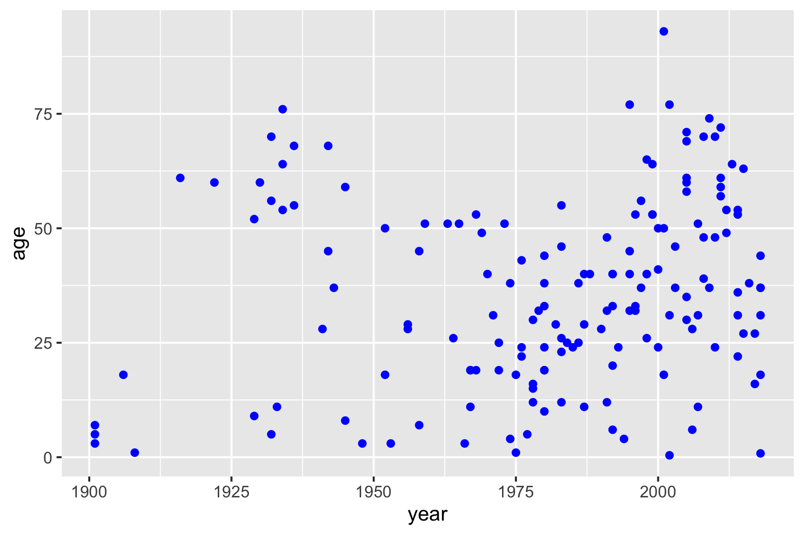
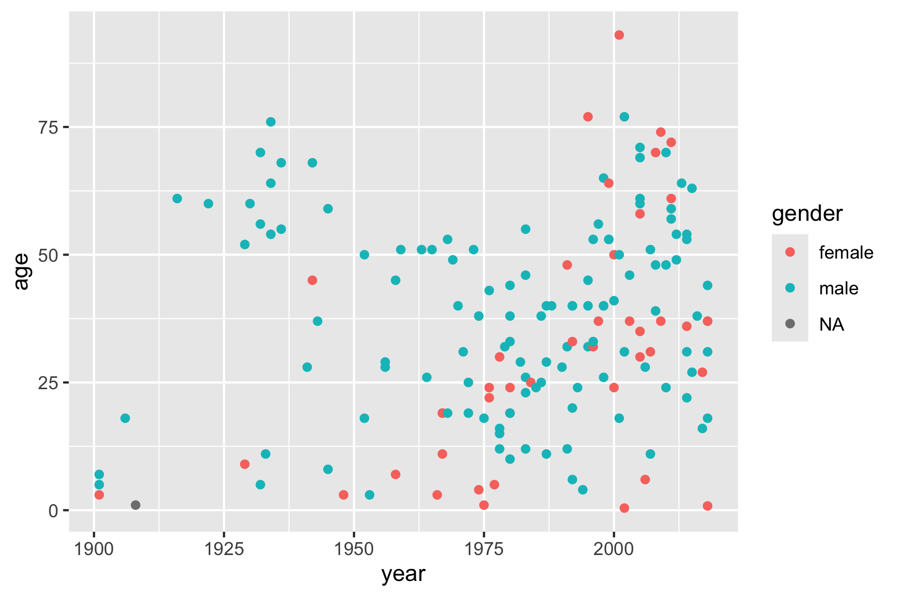
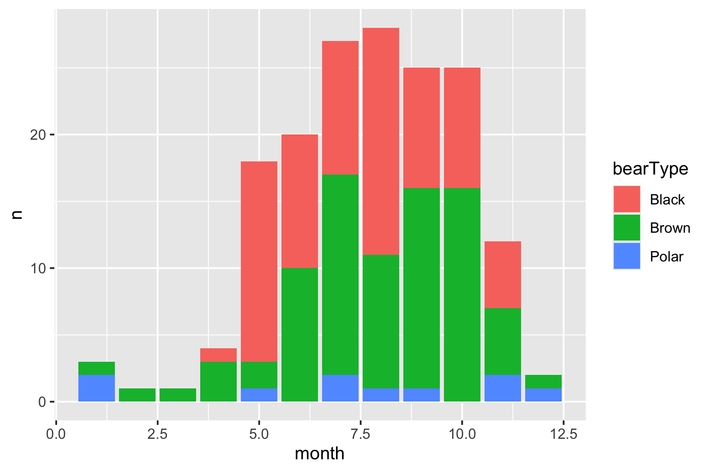
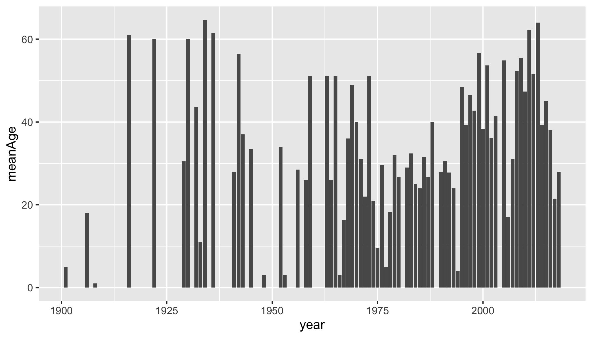
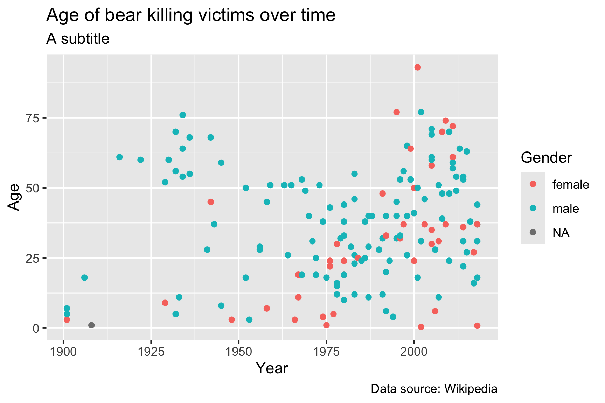
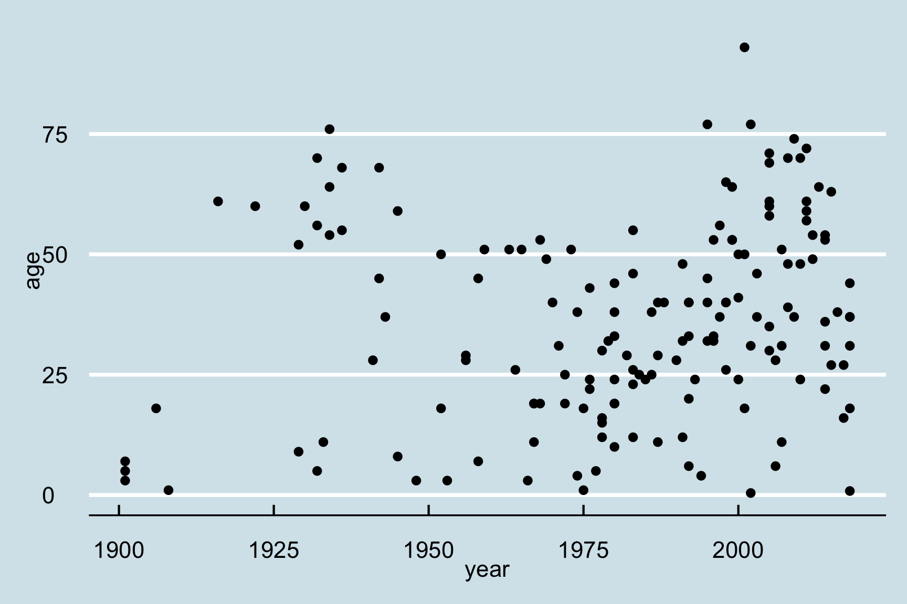

library(readr)
library(dplyr)
df <- read_csv("https://raw.githubusercontent.com/jhelvy/p4a/main/data/north_america_bear_killings.csv")13 Data Visualization
Learning Objectives
- Create simple scatterplots and histograms with Base R graphics.
- Learn the basic plotting features of the ggplot2 package.
- Customize the aesthetics of an existing ggplot figure.
- Create plots from data in a data frame.
- Export plots from RStudio to standard graphical file formats.
Suggested Readings
- Chapter 3 of “R for Data Science”, by Garrett Grolemund and Hadley Wickham
- Data Visualization: A practical introduction, by Kieran Healy
“The purpose of computing is insight, not numbers”
…and one of the best ways to develop insights from data is to visualize the data. If you’re completely new to data visualization, I recommend watching this 40-minute video on how humans see data, by John Rauser. This is one of the best overviews I’ve ever seen of how we can exploit our understanding of human psychology to design effective charts:
13.1 R Setup
Before we get started, let’s set up our analysis environment like before:
- Open up your “data_analysis_tutorial” R Project that you created in the first data analysis lesson - if you didn’t do this, go back and do it now.
- Create a new
.Rfile (File > New File > R Script), and save it as “data_viz.R” inside your “data_analysis_tutorial” R Project folder. - This time, instead of downloading the data file and saving it in our
datafolder, let’s just read it in directly from the web!
For this lesson, we are going to use the North American Bear Killings dataset, which was compiled by Ali Sanne from the Wikipedia page on fatal bear attacks in North America. The dataset contains recorded killings by black, brown, or polar bears from 1900 to 2019 in North America. Each row in the dataset holds information for a single incident with the following columns:
| Variable | Class | Description |
|---|---|---|
| name | character | Name of victim. |
| age | double | Age of victim. |
| gender | character | Gender of victim. |
| date | character | Date of incident. |
| month | double | Month of incident. |
| year | double | Year of incident. |
| wildOrCaptive | character | “Wild” or “Captive” bear. |
| location | character | Location of incident. |
| description | character | Short description of incident. |
| bearType | character | “Black”, “Brown”, or “Polar” |
| hunter | double | 1 if victim was a hunter, 0 otherwise. |
| grizzly | double | 1 if bear is a Grizzly, 0 otherwise. |
| hiker | double | 1 if victim was a hiker, 0 otherwise. |
| onlyOneKilled | double | 1 if only one victim was killed, 0 otherwise. |
Side node: One thing I learned looking at this data is that all grizzly bears are brown bears, but not all brown bears are grizzly bears (kind of like the squares and rectangles thing).
To confirm that we’ve correctly loaded the data frame, let’s preview the data:
glimpse(df)#> Rows: 166
#> Columns: 14
#> $ name <chr> "Mary Porterfield", "Wilie Porterfield", "Henry Porte…
#> $ age <dbl> 3, 5, 7, 18, 1, 61, 60, 9, 52, NA, 60, 56, 70, 5, 11,…
#> $ gender <chr> "female", "male", "male", "male", NA, "male", "male",…
#> $ date <chr> "19/05/1901", "19/05/1901", "19/05/1901", "24/11/1906…
#> $ month <dbl> 5, 5, 5, 11, 10, 9, 6, 8, 9, 10, 6, 7, 10, 10, 10, 7,…
#> $ year <dbl> 1901, 1901, 1901, 1906, 1908, 1916, 1922, 1929, 1929,…
#> $ wildOrCaptive <chr> "Wild", "Wild", "Wild", "Wild", "Captive", "Wild", "W…
#> $ location <chr> "Job, West Virginia", "Job, West Virginia", "Job, Wes…
#> $ description <chr> "The children were gathering flowers near their home …
#> $ bearType <chr> "Black", "Black", "Black", "Black", "Black", "Brown",…
#> $ hunter <dbl> 0, 0, 0, 0, 0, 0, 0, 0, 0, 0, 0, 0, 0, 0, 0, 0, 0, 0,…
#> $ grizzly <dbl> 0, 0, 0, 0, 0, 0, 1, 0, 0, 0, 0, 0, 0, 0, 0, 1, 0, 0,…
#> $ hiker <dbl> 0, 0, 0, 0, 0, 0, 0, 0, 0, 0, 0, 0, 0, 0, 0, 0, 0, 0,…
#> $ onlyOneKilled <dbl> 0, 0, 0, 1, 1, 1, 1, 1, 1, 1, 1, 1, 1, 1, 1, 1, 1, 1,…Look’s good - let’s start making some plots!
13.2 Basic plots in R
R has a number of built-in tools for basic graph types. We will only cover two here because they are so common and convenient: scatterplots and histograms.
13.2.1 Scatterplots with plot()
A scatter plot provides a graphical view of the relationship between two variables. Typically these are used for “continuous” variables, like time, age, money, etc…things that are not categorical in nature (as opposed to “discrete” variables, like nationality). Here’s a scatterplot of the age of the bear killing victims over time:
plot(x = df$year, y = df$age)
The basic inputs to the plot() function are x and y, which must be vectors of the same length. You can customize many features (fonts, colors, axes, shape, titles, etc.) through graphic options. Here’s the same plot with a few customizations:
plot(x = df$year,
y = df$age,
col = 'darkblue', # "col" changes the point color
pch = 19, # "pch" changes the point shape
main = "Age of bear killing victims over time",
xlab = "Year",
ylab = "Age")
Looks like bear killings are becoming more frequent over time (hmm, why might that be?), though pretty evenly-distributed across age (I guess bears will kill you regardless of your age).
13.2.2 Histograms with hist()
The histogram is one of the most common ways to visualize the distribution of a variable. The hist() function takes just one variable: x. Here’s a histogram of the month variable:
hist(x = df$month)
As you might expect, most bear attacks occur during the summer months, when parks get more visitors. As with the plot() function, you can customize a lot of the histogram features. One common customization is to modify the number of “bins” in the histogram by changing the breaks argument. Here we’ll fix the number of bins to 12 - one for each month:
hist(x = df$month,
breaks = 12,
col = 'darkred',
main = "Distribution of bear killings by month",
xlab = "Month",
ylab = "Count")
13.3 Advanced figures with ggplot2

Art by Allison Horst
While Base R plot functions are useful for making simple, quick plots, many R users have adopted the ggplot2 package as their primary tool for visualizing data.
13.3.1 The Grammar of Graphics
The ggplot2 library is built on the “Grammar of Graphics” concept developed by Leland Wilkinson. A “grammar of graphics” (that’s what the “gg” in “ggplot2” stands for) is a framework that uses layers to describe and construct visualizations or graphics in a structured manner. Here’s a visual summary of the concept:

We will start using ggplot2 by re-creating some of the above plots, but using ggplot functions to get a feel for the syntax. But first, install and load the library:
library(ggplot2)13.3.2 A blank slate
The ggplot() function is used to initialize the basic graph structure, and then we add layers to it. The basic idea is that you specify different parts of the plot, and add them together using the + operator. We will start with a blank plot and will add layers as we go along:
ggplot(data = df)13.3.3 Geoms and aesthetics
Geometric objects (called “geoms”) are the shapes we put on a plot (e.g. points, bars, etc.). You can have an unlimited number of layers, but at a minimum a plot must have at least one geom. Examples include:
geom_point()makes a scatter plot by adding a layer of points.geom_line()adds a layer of lines connecting data points.geom_col()adds bars for bar charts.geom_histogram()makes a histogram.geom_boxplot()adds boxes for boxplots.
Each type of geom usually has a required set of aesthetics to be set, and usually accepts only a subset of all aesthetics. Aesthetic mappings are set with the aes() function. Examples include:
xandy(the position on the x and y axes)color(“outside” color, like the line around a bar)fill(“inside” color, like the color of the bar itself)shape(the type of point, like a dot, square, triangle, etc.)linetype(solid, dashed, dotted etc.)size(of geoms)
13.3.4 Scatterplots with geom_point()
Now that we know what geoms and aesthetics are, let’s put them to practice by making a scatterplot. To start, we will add the geom_point() geom and we’ll set the position for the x- and y-axis inside the aes() function:
ggplot(data = df) +
geom_point(aes(x = year, y = age))#> Warning: Removed 2 rows containing missing values or values outside the scale range
#> (`geom_point()`).
Notice how we’ve “added” the geom_point() layer to the previous blank slate. Also note that the names we used to define the x and y axes are column names in the data frame, df. These must be placed inside the aes() function, which tells ggplot to look in df for those columns.
If I wanted to change the point color, I could add that inside the geom_point() layer:
ggplot(data = df) +
geom_point(aes(x = year, y = age), color = "blue")#> Warning: Removed 2 rows containing missing values or values outside the scale range
#> (`geom_point()`).
But I could also map one of my variables to the point color by placing the color variable inside the aes() function:
ggplot(data = df) +
geom_point(aes(x = year, y = age, color = gender))#> Warning: Removed 2 rows containing missing values or values outside the scale range
#> (`geom_point()`).
13.3.5 Bar charts with geom_col()
I recommend using the geom_col() layer to create bar charts, which are great for comparing different numerical values across a categorical variable. One of the simplest things to show with bars is the count of how many observations you have. You can compute this by using the count() function, and then use the resulting data frame to create bars of those counts:
# Compute the counts
monthCounts <- df %>%
count(month)
# Create the bar chart
ggplot(data = monthCounts) +
geom_col(aes(x = month, y = n))
Alternatively, you could use the %>% operator to pipe the results of a summary data frame directly into ggplot:
df %>%
count(month) %>% # Compute the counts
ggplot() +
geom_col(aes(x = month, y = n)) # Create the bar chart
Just like how we mapped the point color to a variable in scatter plots, you can map the bar color to a variable with bar charts using the fill argument in the aes() call. For example, here’s the same bar chart of the count of observations with the bar colors representing the type of bear.
df %>%
count(month, bearType) %>% # Compute the counts for month and bear type
ggplot() +
geom_col(aes(x = month, y = n, fill = bearType)) # Change the bar color based on bear type
Hmm, looks like brown bears are the most frequent killers, though black bears are a close second.
You can plot variables other than the count. For example, here is a plot of the mean age of the victim in each year:
df %>%
filter(!is.na(age)) %>%
group_by(year) %>%
summarise(meanAge = mean(age)) %>% # Compute the mean age in each year
ggplot() +
geom_col(aes(x = year, y = meanAge))
13.4 Customizing your ggplot
There are lots of ways to tweak your ggplot to make it more aesthetically pleasing and easier for others to understand. We’ll cover just two here: labels and themes.
13.4.1 Labels
You can change the labels of your plot by adding the labs() layer:
ggplot(data = df) +
geom_point(aes(x = year, y = age, color = gender)) +
labs(x = "Year",
y = "Age",
color = "Gender",
title = "Age of bear killing victims over time",
subtitle = "A subtitle",
caption = "Data source: Wikipedia")#> Warning: Removed 2 rows containing missing values or values outside the scale range
#> (`geom_point()`).
The labs() layer enables you to modify the labels of any of the variables that you have mapped in your aes() call, as well as some other labels like the title, subtitle, and caption.
13.4.2 Themes
Adding theme layers can change some global aspects of the plot, such as the background color, grid lines, legend appearance, etc. There are many themes to choose from, but using simple themes like theme_bw() or theme_minimal() often improves the plot from the default theme settings:
ggplot(data = df) +
geom_point(aes(x = year, y = age)) +
theme_minimal()#> Warning: Removed 2 rows containing missing values or values outside the scale range
#> (`geom_point()`).
There are LOTS of other themes from external packages as well. Some of my favorites are theme_ipsum() and theme_ft_rc() from the hrbrthemes package:
library(hrbrthemes)
ggplot(data = df) +
geom_point(aes(x = year, y = age)) +
theme_ipsum()
library(hrbrthemes)
ggplot(data = df) +
geom_point(aes(x = year, y = age)) +
theme_ft_rc()
Want to make a plot look fancy like those in the Economist magazine? Try theme_economist() from the ggthemes library:
library(ggthemes)
ggplot(data = df) +
geom_point(aes(x = year, y = age)) +
theme_economist()
13.5 Saving figures
The first (and easiest) is to export directly from the RStudio ‘Plots’ panel, by clicking on Export when the image is plotted. This will give you the option of .png or .pdf and selecting the directory to which you wish to save it to. I strongly recommend you save images as .pdf types as these won’t pixelate when you change the image size.
Another easy way to save a ggplot figure is to use the ggsave() function. First, create your plot and save it as an object:
scatterPlot <- ggplot(data = df) +
geom_point(aes(x = year, y = age))Then save the plot using ggsave() (make sure you create a folder called “plots” in which to save your plot):
ggsave(filename = here('data', 'scatterPlot.pdf'),
plot = scatterPlot,
width = 6,
height = 4)13.6 Other resources
While the ggplot2 library offers a wide variety of options for customizing your plots, remembering exactly how to do specific tasks (like changing the color of a line, or changing the position of a legend) can be difficult. Fortunately, there are wonderful resources for looking up all the tricks to make the perfect ggplot. Here are a few:
Page sources
Some content on this page has been modified from other courses, including:
- Data Analysis and Visualization in R alpha, by Data Carpentry contributors.